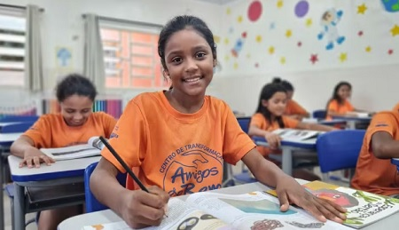

Escola do Futuro
Foco na educação de jovens e adultos, oferecendo cursos profissionalizantes e apoio escolar. Já formamos mais de 1.500 alunos.
Detalhes do ProjetoFoco na educação de jovens e adultos, oferecendo cursos profissionalizantes e apoio escolar. Já formamos mais de 1.500 alunos.
Detalhes do ProjetoOferece consultas médicas e odontológicas gratuitas para a comunidade, além de palestras de prevenção e higiene.
Veja o CalendárioSeu tempo e talento são o nosso maior recurso. Junte-se a nós e ajude a multiplicar a esperança. Temos vagas para diversas áreas: tutoria, organização de eventos, marketing digital e mais.
Interessado? Preencha nosso Formulário de Cadastro!
"O voluntariado é a ponte entre a intenção e a transformação."
Sua contribuição financeira garante a continuidade de todos os nossos projetos. Você pode doar de diversas formas: